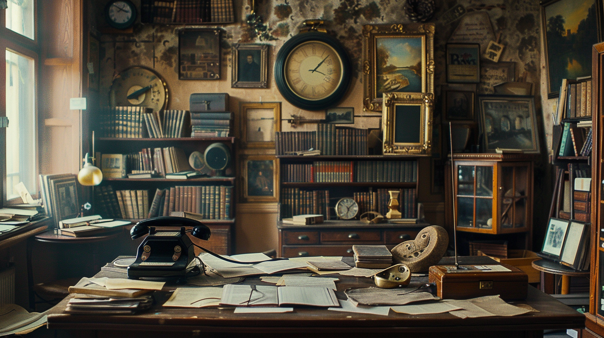

…and I hung up the phone. Immediately I recollected the voice that had spoken in German. It was that of Captain Richard Madden. Madden, in Viktor Runeberg’s office, meant the end of all our work and—though this seemed a secondary matter, or should have seemed so to me—of our lives also. His being there meant that Runeberg had been arrested or murdered. Before the sun set on this same day, I ran the same risk. Madden was implacable. Rather, to be more accurate, he was obliged to be implacable. An Irishman in the service of England, a man suspected of equivocal feelings if not of actual treachery, how could he fail to welcome and seize upon this extraordinary piece of luck: the discovery, capture, and perhaps the deaths of two agents of Imperial Germany? In ten minutes I had developed my plan. The telephone directory gave me the name of the one person capable of passing on the information. He lived in a suburb of Fenton, less than half an hour away by train. I am a timorous man. I can say it now, now that I have brought my incredibly risky plan to an end. It was not easy to bring about, and I know that its execution was terrible. I did not do it for Germany—no! Such a barbarous country is of no importance to me, particularly since it had degraded me by making me become a spy. Furthermore, I knew an Englishman—a modest man—who, for me, is as great as Goethe. I did not speak with him for more than an hour, but during that time he was Goethe.
In the midst of my hatred and terror, I knew that the fast-moving and doubtless happy soldier did not suspect that I possessed the Secret—the name of the exact site of the new British artillery park on the Ancre. A bird streaked across the misty sky and, absently, I turned it into an airplane and then that airplane into many in the skies of France, shattering the artillery park under a rain of bombs. If only my mouth, before it should be silenced by a bullet, could shout this name in such a way that it could be heard in Germany… My voice, my human voice, was weak. How could it reach the ear of the Chief? The ear of that sick and hateful man who knew nothing of Runeberg or of me except that we were in Staffordshire. A man who, sitting in his arid Berlin office, leafed infinitely through newspapers, looking in vain for news from us. I said aloud, “I must flee.”